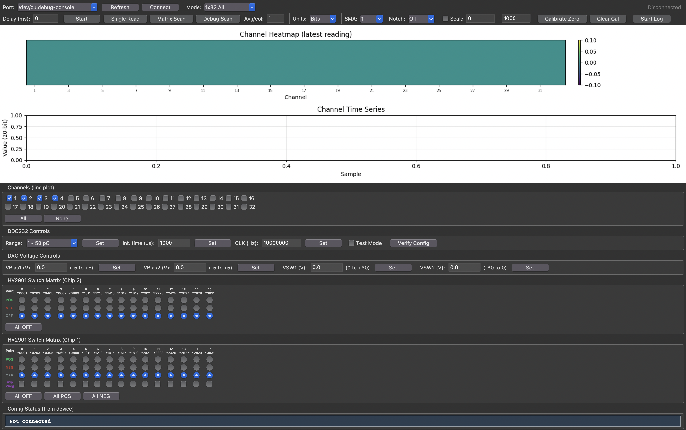

Click any numbered label for a detailed explanation

Select the ESP32-S3 USB serial port from the dropdown. On macOS this is typically /dev/cu.usbmodem*, on Windows COM3 etc.
Rescan for available serial ports. Use after plugging in or power-cycling the ESP32.
Opens the serial connection at 115200 baud. On connect, the GUI reads the device configuration and displays it in the Config Status bar. Click again to disconnect.
Selects what data is streamed and how the heatmap is displayed.
For device testing:
For resistor matrix calibration:
Other modes (1x32 All, 1x12 Odd, 12x32 Full, 8x12 Debug) are for debugging and development.
Shows connection state, streaming status, and live sample rate (samples/s).
Minimum interval between frames in milliseconds. Default 0 = maximum speed. Only useful for development/testing to slow down the data rate. Leave at 0 for normal operation.
Begins continuous binary streaming in the selected mode. The ESP32 sends frames as fast as possible (limited by integration time). Click again to stop. The heatmap and time series update live while streaming.
Performs a one-shot text readout of all 32 channels. Useful for quick verification without starting a stream. Not needed during normal operation.
Single-shot 12×12 matrix scan via text mode. Takes one snapshot and displays it. For continuous matrix data, use the streaming mode instead.
Single-shot debug matrix scan (8×12 or 12×12 depending on mode) with per-column averaging. For continuous debug data, use streaming mode instead.
Number of integration cycles averaged per column in debug scan/stream modes. Higher values reduce noise but slow down the frame rate significantly. Default 1 is suitable for normal use. Only increase for detailed noise characterization.
Controls how values are displayed on the plots:
For resistance overlay to work correctly, use nA or pC mode with calibration.
Smoothing window for the time series line plot. Set to 1 for no smoothing. Higher values (10, 50, 100) average out noise but add latency to the displayed trace. Does not affect the heatmap or logged data.
Applies a notch filter to the line plot to remove mains power interference. Select 50 Hz or 60 Hz depending on your country. Only affects the time series display, not logged data.
When checked, the heatmap color range is fixed to the min–max values you enter. When unchecked, the color scale auto-adjusts to the data range each frame. Use manual scale when comparing frames or when auto-scale flickers too much.
Captures the current average reading (last ~50 frames) as a zero offset. All subsequent data is displayed as the difference from this baseline.
For resistance measurement: set VBias1 to a known voltage, click Calibrate Zero with no DUT connected, then connect the DUT. The heatmap will show resistance values (R = V/I) overlaid on each cell.
Removes the zero calibration offset and the resistance overlay. Returns to displaying absolute raw values.
Saves all streamed data to a timestamped CSV file. The file header includes all device settings (range, integration time, voltages, etc.) as comment lines. Data rows contain a sample index, timestamp, and all channel/matrix values. Click again to stop logging.
Color-coded visualization of the latest reading. In single-channel modes this is a 1×32 (or 1×12) bar. In matrix modes it shows the full row × column grid.
When Calibrate Zero is active and VBias1 is set to a non-zero voltage, calculated resistance values are overlaid on each cell (formatted as ohms, k, M, or G). "OL" means open loop (near-zero current).
Scrolling line plot showing the last 500 samples. In single/manual modes, select which channels to display using the checkboxes below. In matrix modes, use the Show (row/column/average) and Index selectors to choose which traces appear. SMA and notch filters apply to this plot only.
In single-channel modes: checkboxes to select which of the 32 channels appear on the time series plot. All / None buttons for quick selection.
In matrix modes: this area changes to Show (row / column / average) and Index selectors. "Row 3" shows all columns for physical channel 3; "Column 5" shows all rows for HV pair 5; "Average" shows the mean across all rows or columns.
Full-scale charge range, set by internal integration capacitors on the DDC232. This determines the maximum measurable current together with the integration time.
Imax = Qfullscale / tintegration
At 1000 µs (1 ms) integration:
| Range 0 | 12.5 pC | → 12.5 nA |
| Range 1 | 50 pC | → 50 nA |
| Range 2 | 100 pC | → 100 nA |
| Range 3 | 150 pC | → 150 nA |
| Range 4 | 200 pC | → 200 nA |
| Range 5 | 250 pC | → 250 nA |
| Range 6 | 300 pC | → 300 nA |
| Range 7 | 350 pC | → 350 nA |
Halving the integration time doubles the max current (e.g. 500 µs → 100 nA at range 1). Writes the DDC232 config register.
How long the DDC232 accumulates charge on its internal capacitor each cycle.
Default: 1000 µs (1 ms). Takes effect immediately without rewriting the config register.
DDC232 system clock frequency in Hz (default 10 MHz). Generated by the ESP32 LEDC peripheral. The DDC232 uses this for internal conversion timing. Should not need changing in normal operation.
Enables the DDC232 internal test mode. Disconnects all analog inputs and measures a zero-input baseline signal internally. Useful for verifying the chip is functioning and characterizing the noise floor without any external connections. Writes the config register.
Writes the config register and reads it back via SPI to confirm the DDC232 received the correct settings. The result is shown in the Config Status bar (#30) at the bottom of the window.
Controls two DAC8562 chips that provide bias and switch voltages:
Setting any voltage stops the DAC sine wave generator if it was running (sine wave is a debugging/test feature only available via serial console).
Second HV2901 high-voltage analog switch chip with 16 switch pairs (0–15). Each pair has two switches sharing a common output pin:
Only one switch per pair can be on at a time (hardware enforced — both ON = short circuit). In 12×12 Debug mode, even pairs 0, 2, 4, 6 on this chip are used as columns 8–11.
Primary HV2901 chip with 16 switch pairs. Same POS/NEG/OFF controls as Chip 2.
Skip Vneg checkboxes: when checked, that pair uses OFF instead of NEG when it is inactive during matrix scans. This reduces leakage current through unused columns. Only relevant for pairs that are not being scanned.
All OFF: turns off all switches on both chips. All POS / All NEG: sets all 16 pairs on chip 1.
In 12×12 Matrix mode, pairs 0–11 are scanned sequentially. In 12×12 Debug mode, even pairs 0–14 are used as columns 0–7.
Displays the DDC232 config register readback from the device. Shows the FSR (range), format, version, CLK_4X, and test mode bits as read back from the chip via SPI. Updated when you click Verify Config or change Range / Test Mode.